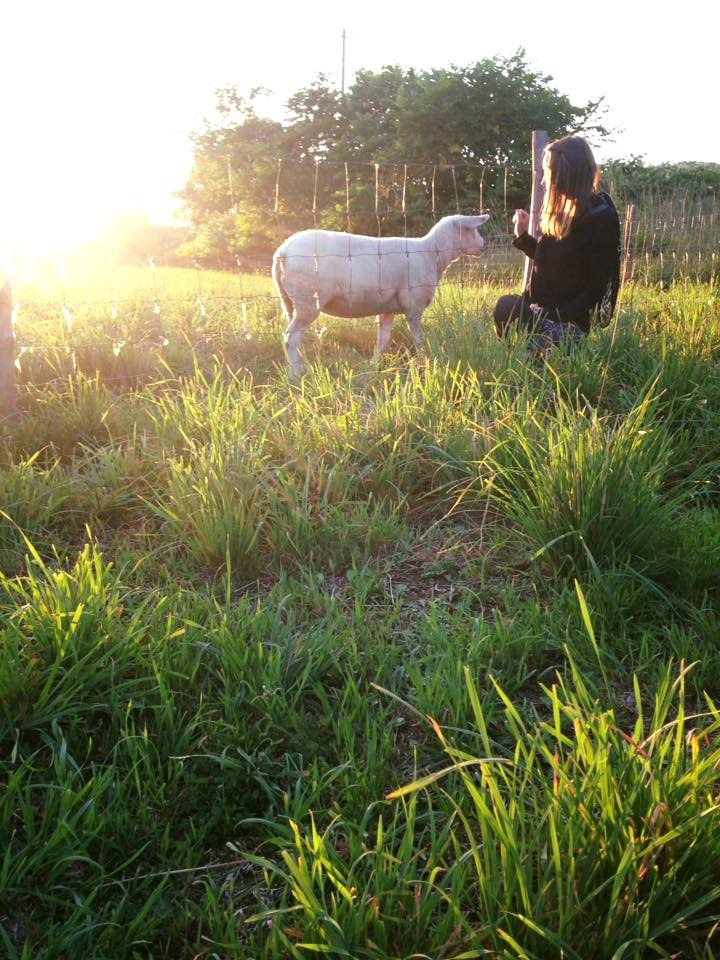
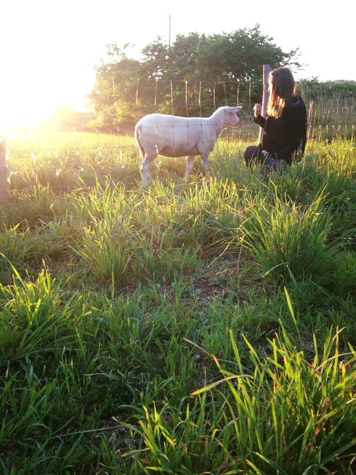

生活と復の作り方 文書文書文書文書文書文書文書文書文書文書文書文書文書文書文書文書文書文書文書文書文書文書文書文書文書文書文書文書文書文書文書文書文書文書文書文書文書文書文書文書文書文書文書文書文書文書文書文書文書文書文書文書文書文書文書文書文書文書文書文書文書文書文書文書文書文書文書文書文書文書文書文書文書文書文書文書文書文書文書文書文書文書文書文書文書文書文書文書文書文書文書文書文書文書文書文書文書文書文書文書文書文書文書文書文書文書文書文書文書文書文書文書文書文書文書文書文書文書文書文書文書文書文書文書文書文書文書文書文書文書文書文書文書文書文書文書文書文書文書文書文書文書文書文書文書文書文書文書文書文書文書文書文書文書文書文書文書文書文書文書文書文書文書文書文書文書
以下のイメージをクリックすると拡大ができる: ↓


 
